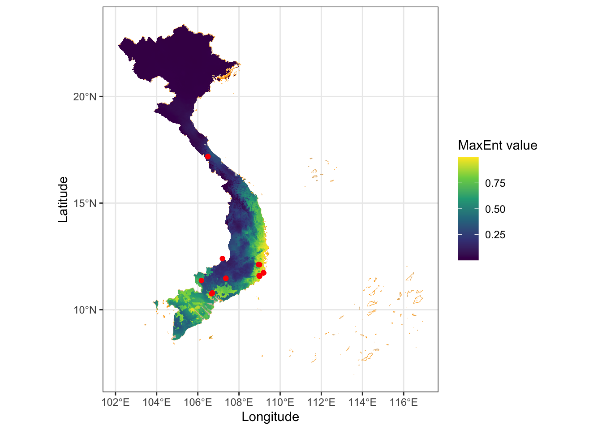

Phần 7 Dự đoán vùng phân bố loài
Gọi các gói lệnh
7.1 Lấy dữ liệu ghi nhận loài Gõ đỏ (Afzelia xylocarpa) từ GBIF
Lọc ra các điểm được ghi nhận tại Việt Nam
7.2 Xem sơ đồ phân bố các ghi nhận
## Reading layer `Vietnamdiaphantinh' from data source
## `/Users/bachnguyen/Library/CloudStorage/OneDrive-Personal/WORKING/ECOR/DATA/Vietnamdiaphantinh.geojson'
## using driver `GeoJSON'
## Simple feature collection with 63 features and 3 fields
## Geometry type: MULTIPOLYGON
## Dimension: XY
## Bounding box: xmin: 102.1421 ymin: 6.953306 xmax: 116.9473 ymax: 23.3939
## Geodetic CRS: WGS 847.3 Chạy mô phỏng Maxent
Sử dụng dữ liệu môi trường gồm 19 biến khí hậu và 1 biến cao độ được cung cấp từ trang web https://www.worldclim.org/. Bộ dữ liệu này đã được cắt theo ranh Việt Nam phần đất liền. Chúng ta sẽ gọi các biến khí hậu này vào R với lệnh stack từ gói raster.
# load toàn bộ biến khí hậu
wcpath = "DATA/VNBioWC/"
VNvariablelist = paste0(wcpath,list.files(wcpath))
#xem danh sách các biến
VNvariablelist## [1] "DATA/VNBioWC/01.tif" "DATA/VNBioWC/02.tif" "DATA/VNBioWC/03.tif"
## [4] "DATA/VNBioWC/04.tif" "DATA/VNBioWC/05.tif" "DATA/VNBioWC/06.tif"
## [7] "DATA/VNBioWC/07.tif" "DATA/VNBioWC/08.tif" "DATA/VNBioWC/09.tif"
## [10] "DATA/VNBioWC/10.tif" "DATA/VNBioWC/11.tif" "DATA/VNBioWC/12.tif"
## [13] "DATA/VNBioWC/13.tif" "DATA/VNBioWC/14.tif" "DATA/VNBioWC/15.tif"
## [16] "DATA/VNBioWC/16.tif" "DATA/VNBioWC/17.tif" "DATA/VNBioWC/18.tif"
## [19] "DATA/VNBioWC/19.tif" "DATA/VNBioWC/20.tif"Ví dụ hiển thị biến Bio01
Gọi gói lệnh dismo để chạy mô phỏng MaxEnt
Tạo các điểm ngẫu nhiên
Khai báo thư mục lưu trữ các tập tin sẽ được tạo ra khi chạy mô phỏng.
Dữ liệu ghi nhận cần được sang định dạng spatial
Chạy mô phỏng với lệnh maxent() trong gói dismo
#B2 chay model
modelBasic <- maxent(
x=currentEnv, # climate variable
p=godoVN_spatial, # species point
a=bg1, #point background
path=outpath, # folder to output result
removeDuplicates=TRUE, # remove duplicate points
# Additional argument that can be passed to MaxEnt
args=c(
'linear=true',
'quadratic=true',
'product=true',
'threshold=true',
'hinge=false',
'responsecurves=true',
'jackknife=true',
'askoverwrite=false',
'removeduplicates=true',
'writeplotdata=true'
)
)Đánh giá mô hình
Sau khi có mô hình, chúng ta sử dụng lệnh predict để tạo lớp bản đồ raster thể hiện vùng phân bố dự đoán cho loài.
fname="predict_map.tif"
mapPredict <- predict(
object=modelBasic,
x=currentEnv,
filename=paste0(outpath,fname),
na.rm=TRUE,
format='GTiff',
overwrite=TRUE,
progress='text'
)## | | | 0% | |================== | 25% | |=================================== | 50% | |==================================================== | 75% | |======================================================================| 100%
## Vẽ sơ đồ với ggplot()
Vùng phân bố tiềm năng của loài với giá trị dự đoán MaxEnt chạy từ 0 đến 1. Khu vực có giá trị càng gần 1 là những khu vực có điều kiện khí hậu, địa hình phù hợp cho sự phân bố của loài. Và ngược lại khu vực có giá trị càng gần 0 là những khu vực khó khăn.
mapPredict_SR <- rast(mapPredict)
ggplot() +
geom_sf(data = vietnam, fill = "grey", color="orange", linewidth = 0.05) +
geom_spatraster(data=mapPredict_SR) +
scale_fill_viridis_c(name = "MaxEnt value", option = "viridis", alpha = 1, na.value = NA) +
geom_sf(data = godoVN_sf, fill = NA, color="red") +
theme_bw()+
labs(x = "Longitude",
y = "Latitude",
title = names(raster))